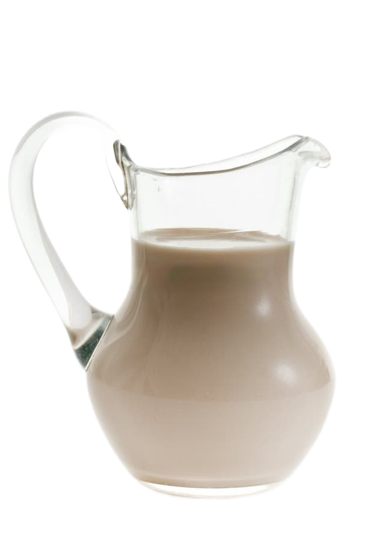

Крупы и бобовые
Кисель из овса
Ингридиенты
- Овсяные хлопья, 500 г
- Кефир, 500 г
- Вода, 1 л
- Соль (по вкусу)
- Хлеб (черный, в овсяные хлопья) — 1 ломтик
- Овсяные хлопья замочить в теплой воде и кефире и оставить на 1–2 суток бродить.
- Хлопья протереть через дуршлаг, удаляя гущу и собирая фильтрат.
- Фильтрат поставить в кастрюле на огонь и, постоянно помешивая, довести до загустения. Признак готовности — появление мелких пузырьков перед кипением.
- Остудить в холодильнике, подавать разлитым по пиалам или кружкам.
По желанию можно добавлять варенье, ягоды, корицу или другие специи.
Почитать описание, рецензии и купить на сайте МИФа